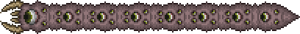

Пожиратель миров появляется когда вы разрушили 3 теневые сферы. Эти сферы находятся в порче, окружены эбонитом. Эбонит можно сломать только с помощью кирки высокого уровня (Кошмарная кирка и Литая кирка), бура, бомб или динамита. При применении на эбоните очищающего порошка, можно превратить его в камень. Саму теневую сферу можно разбить только молотом, мотобуром, бомбой или динамитом. Также босса можно вызвать с помощью корма для червя. Пожирателя миров можно вызвать только в порче, если вы выйдите из порчи, босс улетит и пропадет.
Пожиратель миров может быть проблемой даже для игроков среднего уровня, так как это большой червь, который проходит сквозь блоки, и состоит из множества сегментов, которые атакуют игрока. Кроме того, при уничтожении "внутренних" сегментов червя происходит деление босса на 2 более коротких части, каждая из которых будет действовать как отдельный босс. Чтобы победить этого босса, нужно уничтожить каждую секцию этого босса.